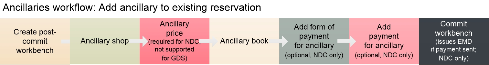
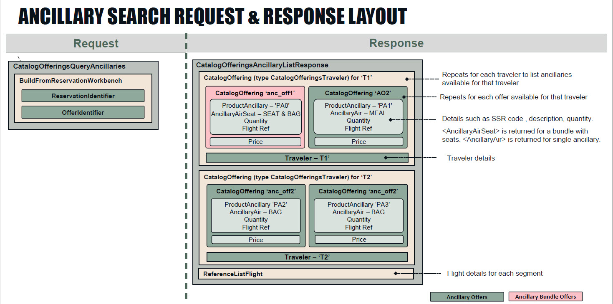
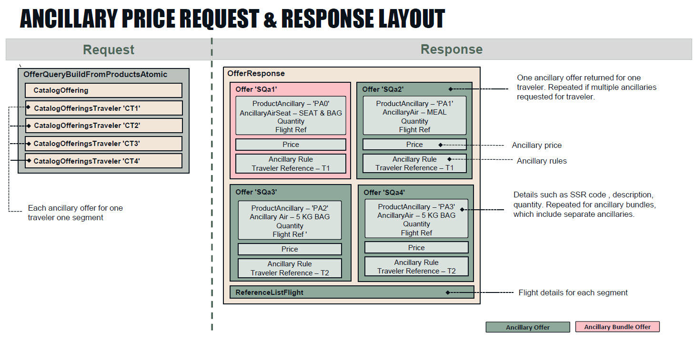

Ancillary and EMD Guide
Ancillaries are any paid optional services filed by airlines and travel providers as available for selected air segments. Available ancillaries vary by airline and segment, but can include baggage, paid seats, pet/animal transportation, unaccompanied minors, and so on.
Related Content: JSON Air APIs Guide, Air Booking Guide, API References for Ancillary Shop , Ancillary Price, Ancillary Book, Ancillary Cancel
In this topic:
- Basic Concepts
- Ancillary Support
- Ancillary Payment and EMDs
- Canceling Ancillaries
- Ancillary Workflows
- Request and Response Layout Diagrams
Basic Concepts
An ancillary is any paid optional service filed for a flight. Industry examples include paid baggage, carbon offsets, and non-baggage services such as pet transport and unaccompanied minors.
Key points:
-
Ancillaries are airline-specific.
-
Ancillary offers returned are specific to a traveler and to a segment.
-
An ancillary is paid for separately from the fare, and an electronic miscellaneous document (EMD) is issued for that payment.
Paid seats are a type of ancillary, and are detailed in the Seats Guide because they use different requests than detailed here for non-seat ancillaries.
Bundled Fares
If an ancillary is combined with an air offer, that offer is called a bundled fare and is returned in the Search API response. No additional price is charged for an ancillary in a bundled fare. An ancillary bundle can be a combination of ancillaries, or an ancillary and a seat assignment. At this time bundled fares are supported only for NDC in Search and AirPrice (i.e., they cannot yet be booked), and only for UA dynamic bundled fares.Ancillary Support
The JSON APIs currently support the following ancillaries in the workflows as noted below for NDC and GDS. For seats support, see the Seats Guide.
The NDC Instant Pay workflow (book and issue ticket in the same session) does not support booking ancillaries.
For GDS and NDC differences in the JSON APIs, see the support tables for seats, ancillaries, fare rules, and exchanges/refunds, and the NDC and GDS Functionality Comparison.
For differences within NDC by individual carriers, see NDC capabilities by airline through JSON API in the Travelport Knowledge Base. See Knowledge Base NDC Resources if you need login assistance.
|
Ancillary type |
Ancillary Shop after AirPrice (must repeat in workbench) | Ancillary Shop and Book (initial booking workflow | Ancillary Shop and Book (existing reservation) | Cancel ancillary | ||||
|---|---|---|---|---|---|---|---|---|
|
GDS |
NDC |
GDS |
NDC |
GDS |
NDC |
GDS |
NDC |
|
|
Paid baggage |
Yes |
Yes |
No |
No |
Yes |
Yes |
Yes |
Yes |
|
Carbon offset |
Yes |
No |
No |
No |
Yes |
No |
No |
n/a |
|
Non-baggage paid ancillaries (e.g., pets, meals, lounge access, wifi) |
Yes |
Yes |
No |
No |
Yes |
Yes |
No |
Yes |
Ancillary Payment and EMDs
Payment for any ancillary, including paid seats (see the Seats Guide), is issued through an EMD (electronic miscellaneous document) and is separate from the payment for the flight/s. EMDs can be either EMD-A (EMD is associated to a ticket) or EMD-S (standalone EMD). The JSON APIs support only EMD-A.
For GDS ancillaries, you can pay for an ancillary only after booking that ancillary. This allows the carrier to confirm the ancillary prior to payment.
NDC carriers vary as to when they require ancillary payment. Some NDC carriers require ancillary payment in the initial booking session while others allow you to book the ancillary without payment.
For detailed NDC support by carrier, see the Knowledge Base article NDC capabilities by airline through JSON API (see Knowledge Base NDC Resources if you need login assistance).
NDC carriers issue their own EMDs. After the EMD is issued, there are some differences in EMD handling between GDS and NDC in the JSON APIs:
-
For GDS, use the EMD display and void requests to retrieve or void an EMD.
-
For NDC, use a Reservation Retrieve to retrieve EMD details. To void an EMD, you must also void the associated NDC itinerary; see the Exchange, Refund, and Void Guide.
Canceling Ancillaries
Use the Ancillary Cancel request to cancel baggage and/or paid seats for both GDS and NDC, and to cancel non-baggage ancillaries for NDC. Canceling non-baggage ancillaries for GDS is not supported.
Workflow Summary
Ancillary Shop after Pricing Workflow
For select ancillaries as noted above in Ancillary Support, you can send an Ancillary Shop request after AirPrice without a workbench session. You'll need to repeat the Ancillary Shop request in a later workbench before you can book an ancillary.
| Step # |
Ancillary Workflow Step |
Description and Notes |
API Reference |
|---|---|---|---|
|
Search for flights |
Searches for flights. |
||
|
2 |
Price the itinerary |
Price a selected itinerary from the Search response. Required before sending an ancillary shop request outside a booking workbench. |
|
|
3 |
Ancillary shop request |
Shop for available ancillaries. |
Ancillary Workflow for Existing Booking
Follow these steps to add a supported ancillary to an existing booking (see Ancillary Support above). For free and paid seats, see the Seats Guide.
| Step # |
Ancillary Booking Workflow Step |
Description and Notes |
API Reference |
|---|---|---|---|
|
Create workbench for existing reservation |
Returns a system-generated identifier for the workbench that must be sent in subsequent requests for that workbench. |
||
|
Ancillary shop request |
Shop for available ancillaries. |
||
|
3 |
Ancillary price request |
Price selected ancillary. Required for NDC. Not supported for GDS.
|
|
|
4 |
Ancillary book request |
Add selected ancillary to workbench. |
|
|
5 |
Add form of payment (FOP) for ancillary (optional, supported in same workbench only for specific NDC carriers) |
For specific NDC carriers, you can choose to pay and issue the EMD for the ancillary in the same workbench in which you shop and book the ancillary. Send the details for the form of payment (FOP) to be used to pay for the ancillary. The response returns a system-generated identifier for the FOP that must be sent in the Add Payment request next. Payment and EMD Workflow for Seats and AncillariesFor all GDS and some NDC carriers, you must commit the booking workbench to confirm the seat or ancillary, and then create a new workbench to send payment and issue the EMD. Payment and EMD in the same workbench as booking is supported only for specific NDC carriers. For ancillary requirements by NDC carrier, see NDC capabilities by airline through JSON API in the Travelport Knowledge Base. (If you need login assistance, see Knowledge Base NDC Resources.) |
|
|
6 |
Add payment for ancillary (optional, supported in same workbench only for specific NDC carriers) |
If you sent FOP per the preceding step, send the IDs for the offer/s to pay for and the FOP to use. |
|
|
7 |
Commit the workbench |
Final step in the workflow. Depending on payment, one of the following occurs:
|
Workbench Commit API Reference
|
Workflow Diagrams
Paying for an ancillary and issuing an EMD in the same workbench as shopping and booking the ancillary is supported only for NDC. For GDS, you must first commit the workbench to confirm the paid seats before you can pay for the ancillary and issue the EMD in a separate workbench.
FOP and Payment requirements for NDC vary by carrier per Ancillary Support above.
Each box in the diagram represents one API call in the workflow.

Add FOP and Payment (optional)
As part of the workflow, you can send form of payment (if not already in the reservation) and payment for the ancillary offer. If you are also ready to ticket the booking, send payment for both the ancillary offer and the air offer. Reference both the offer and the FOP in the request. See the Add Payment API Reference for endpoint and payload details.
The following example adds payment for both an offer ("id": "offer_1",) and an ancillary ("id": "an_o1").
{
"Payment": {
"id": "payment_1",
"Identifier": {
"authority": "Travelport",
"value": "A0656EFF-FAF4-456F-B061-0161008D6A5E"
},
"Amount": {
"code": "AUD",
"minorUnit": 2,
"currencySource": "Charged",
"approximateInd": true,
"value": 63.1
},
"FormOfPaymentIdentifier": {
"id": "formOfPayment_5",
"FormOfPaymentRef": "formOfPayment_5",
"Identifier": {
"authority": "Travelport",
"value": "A0656EFF-FAF4-456F-B061-0161008D6FOP"
}
},
"OfferIdentifier": [
{
"id": "offer_1",
"offerRef": "offer_1",
"Identifier": {
"authority": "Travelport",
"value": "07664bb3-37a0-4c63-a2ef-ed71b5f48d49"
}
},
{
"id": "an_o1",
"Identifier": {
"authority": "Travelport",
"value": "3427d42c-a72d-49ff-b29e-7bb8faa28a47"
}
}
]
}
}Commit
As the last step in the flow, commit the workbench.
For an initial booking, the commit creates a reservation with the ancillary details. If FOP and payment for the ancillary were also sent, an EMD for the ancillary is issued.
For an existing reservation, the commit causes one of the following:
-
If no payment was sent, the commit updates the held booking with the ancillary.
-
If FOP and payment for the ancillary were sent, the commit updates the held booking with the ancillary and issues an EMD for the ancillary.
-
If FOP and payment for the ancillary and the air offer were sent, the commit issues the ticket and an EMD for the ancillary.
The commit response returns the following ancillary-specific details in these objects:
- Product: Product and ancillary identifiers, and the seat assignment if the ancillary is a paid seat.
- Document: The Document object includes both the ticket number and the EMD number, if issued.
The following excerpts from the commit response show the ancillary details in Product, and the ticket and EMD numbers and charged amounts in Document.
...
"Product": [
{
"@type": "ProductAncillary",
"id": "product_seat_2",
"Identifier": {
"authority": "Travelport",
"value": "b20e57ff-855a-403d-b746-aae16b1e26f4"
},
"Ancillary": {
"@type": "AncillaryAirSeat",
"FlightRef": [
"Flight_01"
],
"SeatAssignment": {
"Seat": "018A"
}
}
}
]
}
],
...
"Document": [
{
"@type": "DocumentTicket",
"Number": "2203768856641",
"TravelerIdentifierRef": {
"id": "travelerRefId_1",
"value": "877fed2a-0704-42ee-b98b-145fbaff9ed8"
},
"Amount": {
"Total": 1016.8
}
},
{
"@type": "DocumentEMD",
"Number": "2202901087112",
"TravelerIdentifierRef": {
"id": "travelerRefId_1",
"value": "877fed2a-0704-42ee-b98b-145fbaff9ed8"
},
"Amount": {
"Total": 49.3
},
"EMDDescription": {
"value": "SEAT ASSIGNMENT"
}
}
]
Request and Response Layout Diagrams
The following overview diagrams illustrates the basic structure of the requests and responses for ancillary shop and price. These diagrams don't include every object that might be returned, and diagrams may not reflect minor updates.
Ancillary Shop
The following diagram illustrates the general structure of the Ancillary Shop request and response, including most high-level objects.

Ancillary Price
The following diagram illustrates the general structure of the Ancillary Price request and response, including most high-level objects.
